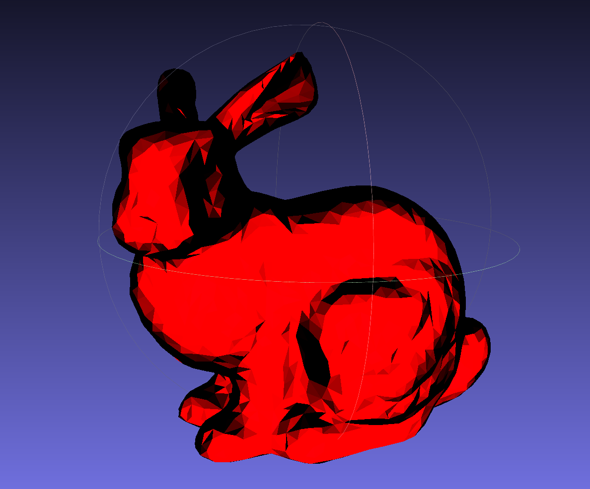
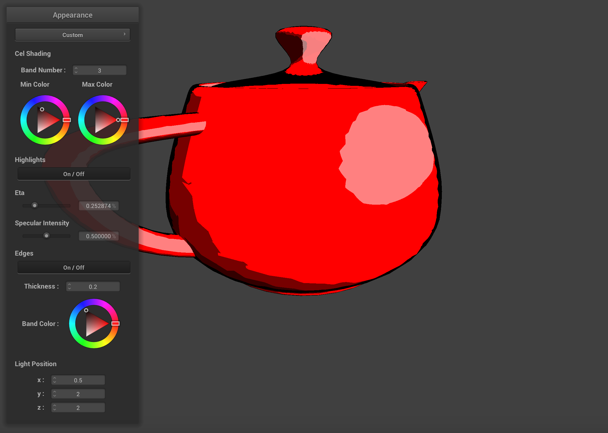
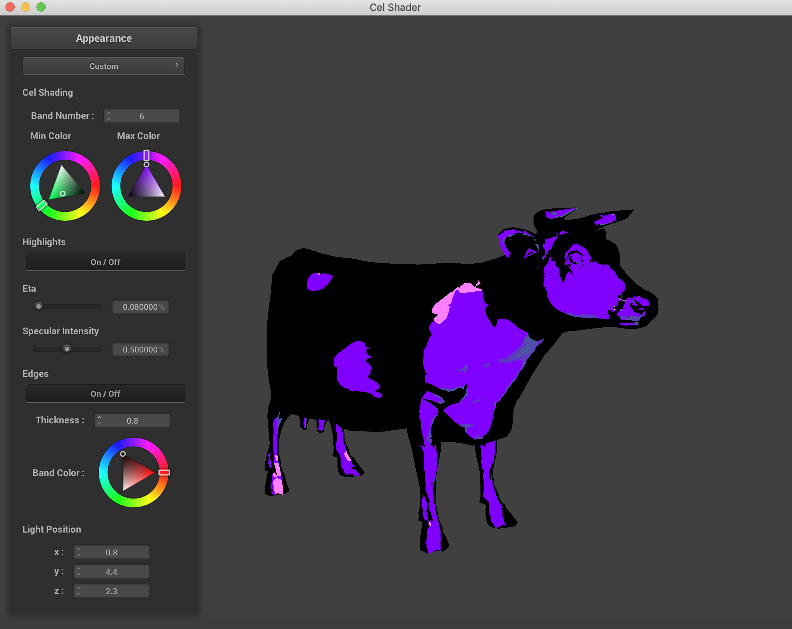

Cel Shading
Tristan Burke, Andrew Noglows, Shivam Parikh
Abstract
Our project was to implement a Cel-Shader, also known as a toon shader. This shading method is similar to the comic book style of rendering images. For the scope of our project, we implemented a single color renderer that has the ability to take in primitive objects, like triangles, spheres, and planes. An added functionality was being able to import triangle meshes in the Wavefront .obj file format. We are pleased to share our results with you below.
Problem Description
We wanted to start by modifying our Project-4 Renderer to utilise the GLSL Shader Capabilities for our problem. We split the problem statement into a few parts. First, we wanted to build a GLSL Shader that applied the properties of the classical toon-shader. Then, we wanted to modify the GUI in the Project-4 Renderer to apply dynamic parameters that could result in different output images for our objects. And finally, we wanted to add more than just collision objects to our input abilities so that we could render external meshes, preferably in pre-existing file formats. One part of our problem that we would have preferred to add but were unable to is the potential for multi-colored scene files.
The Technical Approach
- The GLSL Shader: GLSL Shaders are small programs that run and live on the Graphics Processing Unit (GPU) of a computer. Shaders contain the math equations and calculations that must be evaluated for each pixel rendered on the screen. Typical inputs include the light sources, intensity, material properties, and texture mapping coordinates. The GPU is hardware optimized for these type of per-pixel computations and is able to compute the effects of changing parameters rather quickly when compared to a CPU execution time. GLSL is a C-like language that is targeted towards vector and matrix manipulation. Vectors and matrices are very integral components of most graphics computation. More information about GLSL can be found here. We were introduced to GLSL Shaders in Project 4, so we decided to adapt the Project 4 code to run our custom shader on objects that went beyond the primitive sphere, cloth, and plane of Project 4. The details of our custom shader are discussed in the section on Shading Algorithms.
- Shading Algorithms: The shading algorithm that we used wat the Blinn-Phong Reflection Algorithm. This algorithm works by calculating the normalization of the dot product of the ray from the point to the viewer (camera) and the reflected light ray on from that point. For each vertex, we calculate its blinn-phong reflection value, which we will call its index. We know that the dot product needs to have a value between -1 and 1, so we uniformly divide this range by the number of bands that the user has selected. For instance, if a user wants their object to have four bands, the ranges of each color assignment will be [-1, -0.5), [-0.5, 0), [0, 0.5), and [0.5, 1]. The colos for each of these ranges are determined by the maximum color and the minimum color that the user will set. Our shader will interpolate the colors for each band. By interpolating on the range, rather than the specific point, this allows for each individual band to maintain the same color and give us the style we desire, rather than having a gradient from the maximum color to minimum color.
After completeing our uniform disstribution we attempted to implement non uniform distributions into our shader. Due to the personalization, that our GUI provides, we decided against ultimately including non-uniform distributions for band index values as it did not provide the added style that we were hoping for. We implemented a guassian distribution for the index ranges and found that it did not add to our project, so we discarded it.
Next, our cel shader implements edge detection. This is done by calculating the normal of the dot product of the vertex normal and the viewer's (camera's) position. If this value is within our specified edge range, then we have detected an edge and will color it the desired edge color.
Finally, we implemented specular shading on our object. We did this by first calculating the halfway H between the lightsource direction and the viewer (camera) direction. Next, we calculate the dot product of H and the vertex normal. If this value is greater than 1 - eta (user specified), then there is specular reflection on this vertex. Depending on the intensity of the highlight that the user specifies, the color is equal to its color from our previously described algorithm multiplied by the intensity. - Updating the GUI: We updated the GUI from project 4 to better suit our project. We removed the previous parameter boxes and added our own, mimicing the starter code. Through our GUI, we are able to implement many customization's for our shader, that change its parameters. First, we are able to change the colors used and the number of bands. Next, we can enable/disable specular shading, change the eta value, and change its intensity. We can also enable/disable edge detection, choose the edges width, and its color. Lastly, we are able to change the light sources position. This feature is important because the shader is heavily dependant on the vector from the light source. By being able to move both the camera position and the light position, we can clearly see how our shader reacts!
Band Count and Colors Highlights, Specular Size, Specular Intensity, And Edge Toggling Edge Thickness, Band Color, Light Position Manipulation - The OBJ Loader: We conducted most of our original testing on the simple sphere, plane, and cloth objects made available to us in the Project 4 Code. However, the real magnificence and complexity of our shader can't be admired from looking at perfectly uniform objects. We wanted to be able to compare our results to the images we had found on other cel-shading project results pages. The OBJ Loader we found was an open source, MIT Licensed header file that we were able to incorporate rather smoothly into our source code. One major hiccup we encountered was the fact that some functions from the CGL Library of Vectors had overlapping names and when the two header files were being imported, there were duplicate symbols being linked by the compiler. Rather than getting deep into the make files and dealing with debugging our compiler issues, we learned about a C++ Keyword, 'inline' which simply makes a copy of the function everywhere the function is called. While I can see why this may be memory inefficeint due to the amount of space taken up on the memory by Code, memory was not an issue for most of our laptops, and this was the fastest and most time efficient way for us to move on to the important parts of the project. Sometimes, the meshes we read had inverted normals until we opened them in Meshlab and then re-exported them as objs to ensure that the normals were facing the correct direction and any extraneous data that our parser could not read was removed.

Stanford Bunny Mesh opened in Meshlab  Stanford Bunny with Meshlab built-in toon shader, which we took visual inspiration from. Stanford Bunny with Normal Shader Stanford Bunny with our Cel Shader - Modifying Meshes: For many of the meshes, the objects were simply too low of a resolution for us to be able to render them nicely on our shader. For example, the Utah Teapot we first downloaded had a very coarse detail to it, and the specular lighting was struggling to present nice results for us. To improve the quality of our meshes, we used two remeshing algorithms from the program Meshlab, which is demonstrated below. We used Catmull-Clark Subdivision, and then converted the mesh into a pure triangular mesh to create the superior results of an upsampled mesh.
As you can see, the jaggies on the specular are unpleasant effects of a low resolution mesh. The low resolution mesh when first opened in Meshlab. The high resolution mesh after subdividing surfaces.  The jaggies are not completely gone, but they are not as drastic in terms of fall-off as before the upsampling.
Apart from resampling meshes, we also used Meshlab to resize and scale some of our meshes so they could fit in the frame of the GUI and be easier to move around. One side effect of the resampling however was that it greatly increased the complexity of the shapes being rendered, so the program was prone to using significantly more processing power from the GPU.
Lessons Learned
Overall, this was a rather interesting project, we learned the following lessons. etc.
Contributions
Everyone contributed equally ...
Miscellaneous Results, Videos, and Screenshots
|
|
|
|
|
|
|
|

|
|
|

|
|
|

|
References
Referenced Links, Articles, and file sources
- Project 4 from CS 184: https://cs184.eecs.berkeley.edu/sp19/article/34/assignment-4-cloth-simulation
- Utah Teapot OBJ Source: https://graphics.stanford.edu/courses/cs148-10-summer/as3/code/as3/teapot.obj
- Captain America OBJ Source: http://3dmag.org/en/market/item/2955/
- Cow OBJ Source: https://groups.csail.mit.edu/graphics/classes/6.837/F03/models/cow-nonormals.obj
- Stanford Bunny OBJ Source: https://graphics.stanford.edu/~mdfisher/Data/Meshes/bunny.obj
- OBJ Parser: https://github.com/Bly7/OBJ-Loader/blob/master/Source/OBJ_Loader.h
- Wikipedia: https://en.wikipedia.org/wiki/Cel_shading
- https://www.raywenderlich.com/146-unreal-engine-4-cel-shading-tutorial
- http://nehe.gamedev.net/tutorial/cel_shading/25001/
- http://www.lighthouse3d.com/tutorials/glsl-12-tutorial/toon-shading/
- Paper/Project Report on Cel-Shading: https://www.cs.rpi.edu/~cutler/classes/advancedgraphics/S12/final_projects/hutchins_kim.pdf
- http://rbwhitaker.wikidot.com/toon-shader
- https://www.reddit.com/r/unrealengine/comments/7wgas1/creating_cel_shading_with_outlines/
- http://users.csc.calpoly.edu/~zwood/teaching/csc471/finalproj24/nmarcy/
Future Steps
We made quite a bit of progress on this project, getting OBJ files imported and being able to sample colors from textures went a few steps beyond what we had envisioned when we set off on the journey. But there is always more to learn and more to be done. The next steps we discussed as a team are things we thought of before the project started, but also things we encountered along the way that we were unable to implement in the duration of the project.
UV textures and material files are often packaged with the OBJ file format, and contain texture mappings for OBJ files to appear closer to the real world. We were able to sample a single color from png texture files for our project, but a next step is to accurately map the uv coordinates of each vertex and face from the png texture file.
Another neat step relates back to the shader itself, implementing shadows on other objects would be really cool as well. When we implemented the shifting light position parameters, we were able to see the effects of the self shadow based on the Blinn-Phong shading algorithm we adapted for our Cel Shader, but when we add a plane or sphere onto the renderer, the shadows do not interact between objects.
Some OBJ files also come with multiple detatched meshes, so it would be equally cool to allow for the rendering of multiple scenes or multiple meshes on the same renderer to build a cohesive Cel Shaded scene.
We would also like to expand beyond just OBJ files because the world of 3D art has made so many neat scenes and objects that our shader would strongly benefit from being able to render more than just OBJ files.
Something we struggled with in our shader was non-uniform band shading. We wanted to implement a shader that determined the thickness and color of bands based on a PDF sampling of colors and light intensity on particular points of the shape being rendered, rather than just uniformly splitting into bands based on pre-determined ranges.
Conclusion
We would like to thank the course staff for their support on Piazza and in Office Hours for helping us come up with solutions to making this project what it is now. We thoroughly enjoyed the process of building the Cel Shader and also enjoyed many of the other class projects we got to see during the expo. As computer scientists that are so often bogged down in the algorithms and the data, it was nice to take a class that took us back to the visual arts and perceptive computing.